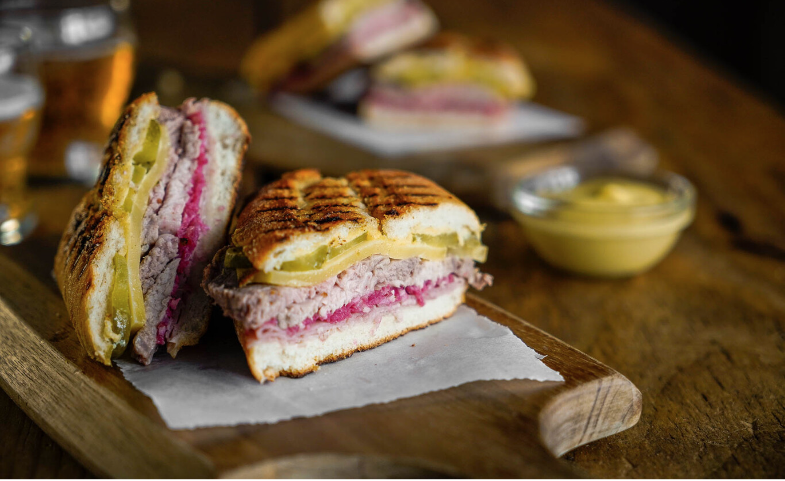

Home
Cuban Sandwich

Description
A perfect sandwich for that people who love meat.
This recipe is easy and fast to make. It would be perfect if you usually rush your day to day.
Ingredients (for 2)
- Dijon's mustard - 10 gr
- Chapata bread - 2 units
- Cooked ham - 4 slices
- Salami - 6 slices
- Rusted pork - 6 slices
- Swiss cheese - 4 slices
- Big pickle - 3 units
- Butter - 10 gr
Steps
- Cut (open) the breads and sink the mustard.
- Put the Ingredients in this order: ham, salami, pork, cheese and pickles.
- Close the sandwiches and sink with Butter.
- Put the sandwiches on a sandwich maker and cook it for some minutes (soft hot).
- Cut them in halfs.
- Enjoy!